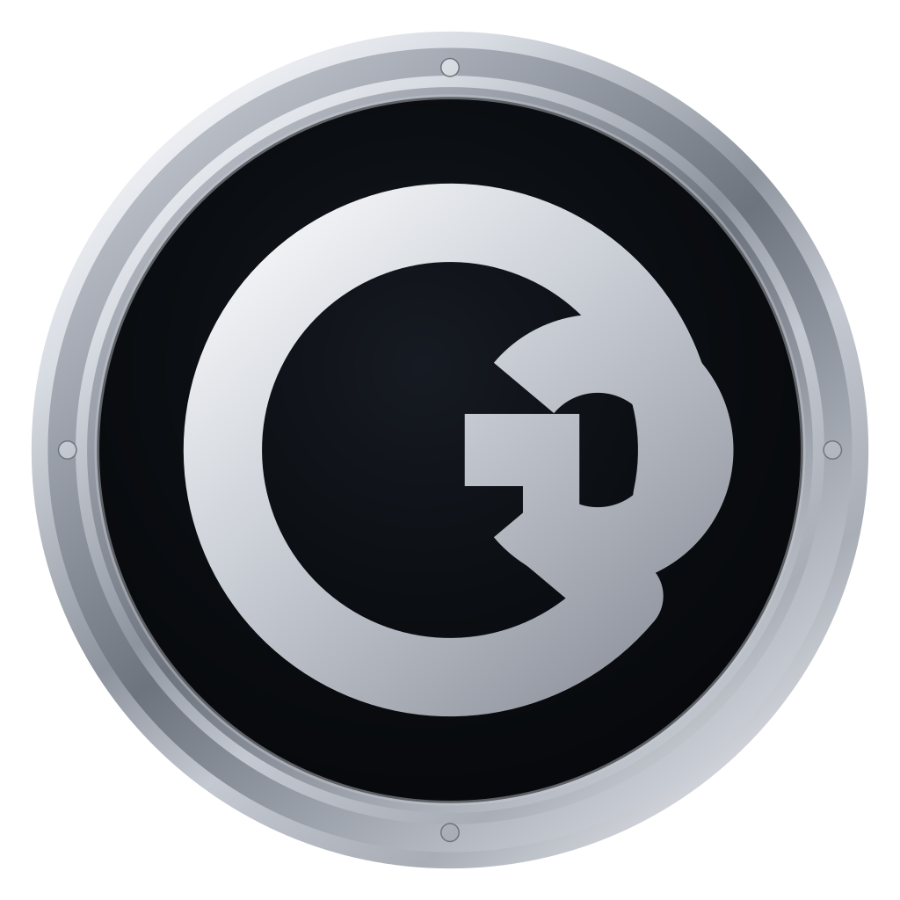
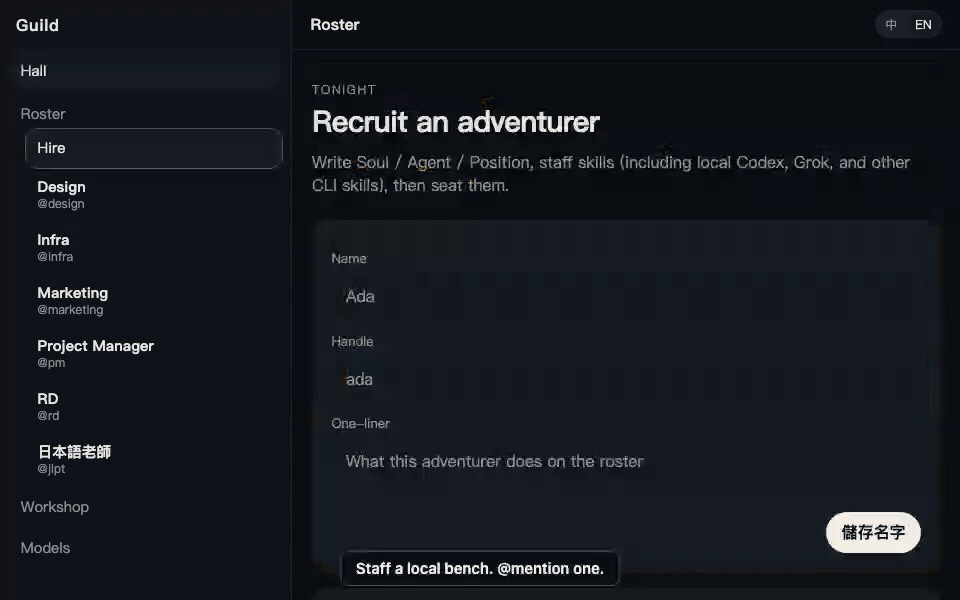

Branch a quest
Open a branch from a message. The child keeps the roster, Channel.md, and up to 20 messages. Close can merge MEMORY.md back to the parent.

Not another omniscient chat. Staff named seats. A channel is an open contract. A turn that ran tools is verified before it writes to MEMORY.md. Next move is npx @kevin5251984/guild web — opens http://127.0.0.1:7420.
00 · Try the hall
Click @pm — only PM answers. Click @rd — a different seat. Edit Voice, ask PM again — same person, different voice.
01 · v0.2.50
This page is a four-language fixture. The product on :7420 is English chrome with five Chinese seat names — not a four-language app.
Open a branch from a message. The child keeps the roster, Channel.md, and up to 20 messages. Close can merge MEMORY.md back to the parent.
Same loopback hall. Read, reply, stop, steer — over HTTP. Attachments, branches, and the trajectory panel stay on the desk.
Default model path with no API key. Those prompts go to opencode.ai. Switch provider in /settings.
Effort only where the model supports it. Fast picks low, then minimal — not a second provider.
@handle does not hire a seat. @quest / @channel / @all broadcast. Numbered lines share a wave; 完成後 / 最後 wait.
Foreign Origin is refused. Host browse hides secret files. MCP HTTP shows env keys, values as ***.
02
The hall on :7420. This tab is a fixture of the same idea.

Hall
The hall on :7420. This tab is a fixture of the same idea.
03 · How a turn runs
@handle → chatReply → HarnessService.turn → runAgentLoop
That text is the answer. The loop stops.
gateTool → Promise.all → append results → ask again. Bounded. At the bound it asks for a final answer.
steer reaches the model next round as <user_steer>. Stop aborts the turn AbortSignal. Skill catalog is a name + summary; the body loads only when the model calls skill.
Guild borrowed one Hermes shape for the browser snapshot — never the live Chrome profile. The turn loop is Guild’s own. Not a Codex app-server harness. Not an OS jail. Default sandbox is workspace_write. Opt in to full_access.
Files: packages/daemon/src/harness.ts · generate.ts · tools.ts · browser.ts.
04 · What runs locally
Node ≥ 22.19. One line, no clone. The hall is http://127.0.0.1:7420.
http://127.0.0.1:7420.MIT · $0
Not a SaaS seat. Not a cloud workspace. A local guild.
npx @kevin5251984/guild web # http://127.0.0.1:7420 # checkout instead — pnpm 10.x pnpm i pnpm test pnpm dev
| Limit | Fact |
|---|---|
run / write | Your shell, gated to the workspace. Unset GUILD_SANDBOX = workspace_write. |
| MCP | Host Claude / Cursor / Codex stdio is live with no import step. |
| Browser | Snapshots last_used Chrome into ~/.guild/browser-profile/chrome. Set GUILD_BROWSER_REAL_PROFILE=0 for empty. |
| Origin | Foreign Origin is refused. Missing Origin is allowed. Not a login. |
| Host files | Denylist: oauth.json, models.json, mcp.json, commandcode.json, credential files. Home is still browsable. |
| MCP env | HTTP shows keys; values are ***. The child still gets the real env. |
| Schedule | Host ticker (60s). cronjob tool. Per-job sheet at #s/<id> — pause, resume, test run. |
Read SECURITY.md before you point this at a machine you care about.
05 · FAQ
No. OpenCode Free is the default path. Those prompts go to opencode.ai. Command Code is an optional subscription picker. Switch provider in /settings.
No. Interactive preview — no model calls. Fixed replies. This tab does not talk to 127.0.0.1:7420.
No. Node ≥ 22.19 and npx @kevin5251984/guild web is enough. pnpm is only if you are reading the code.
run and write do?Your shell, gated to the workspace. Unset GUILD_SANDBOX = workspace_write. Read SECURITY.md before you point this at a machine you care about.
Yes. Ask a seat, or open the sidebar sheet. Times read like speech — every 2h, in 30m, 0 9 * * * — and each job gets a sheet with pause, resume, and a test run that returns to that hall. A run cannot schedule another job.
One guild master can open channels, create seats, and assign work, and stays off every roster. The hall eases open instead of snapping. Settings stays one roster, and Free stays a single row.
Free. Open source under the MIT license.